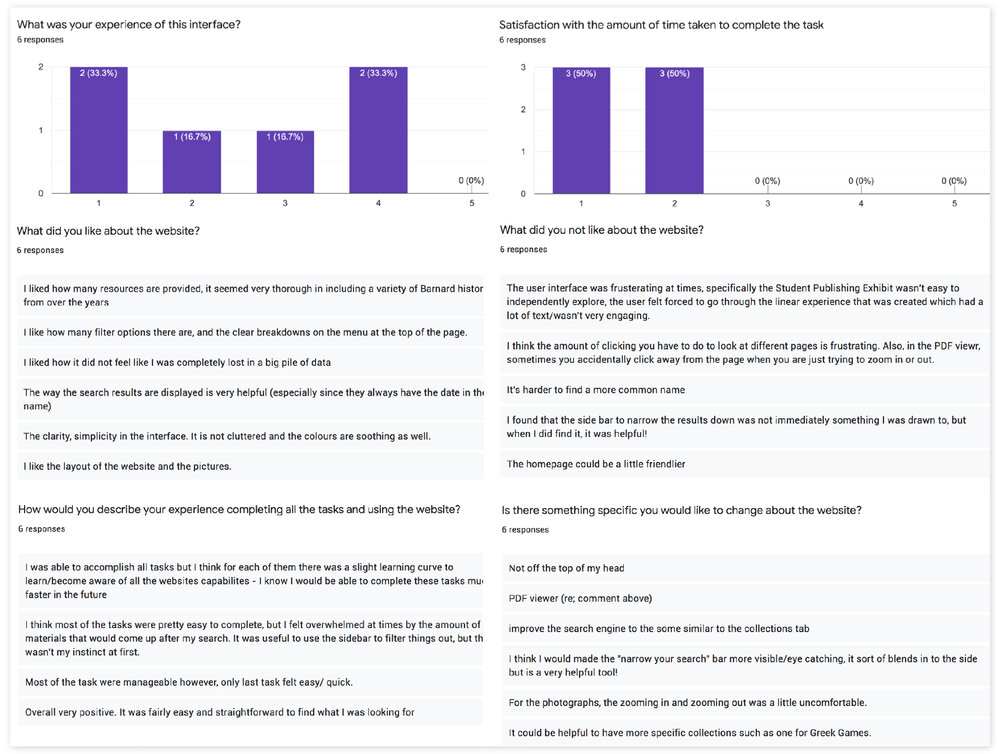
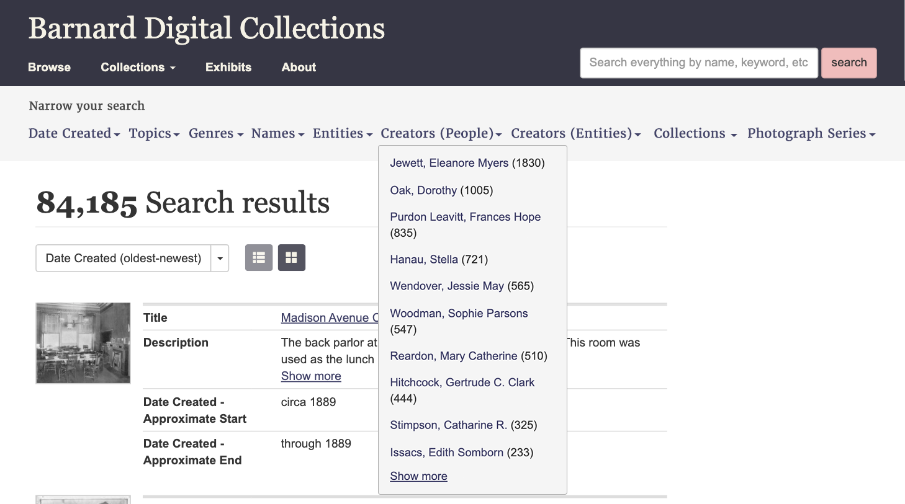

Ten remote usability sessions on Barnard College's digital archive — identifying discoverability barriers and navigation failures, then delivering four prioritized recommendations with Figma mockups for immediate implementation.
Barnard Digital Collections provides students and researchers with free access to nearly 85,000 academic sources — newspapers, scrapbooks, photographs, and archival documents. Despite the scale of the collection, no major design changes had been made to the website since its inception.
The client wanted us to test the desktop version of the site, with particular focus on two specific features: the filter/metadata system and the exhibits section. A website update was already in the pipeline — our study would inform exactly what to prioritize.
Originally planned as in-person sessions, COVID-19 forced a complete pivot to remote testing via Zoom. Participants were asked to share their screen and think aloud throughout. Sessions were recorded for cross-referencing.
From a sample of 20 candidates, we shortlisted 8 — a deliberate mix of Barnard students, staff, and external researchers, some of whom had never used digital archives for research before. Each team member moderated 2 sessions; I moderated 2 and served as note-taker for another 2.
We presented all participants with the same scenario to ensure task comparability:
"Imagine that you are an independent researcher looking for information on student life at Barnard College in the 1960s and '70s. You have come to the Barnard Digital Collections portal to source materials from their archive."
— Study scenario given to all participants
After collecting data from all 10 sessions, each team member independently analyzed their interviews and compiled findings. We then converged to identify the patterns that cut across participants and select 4 final recommendations based on severity and implementation feasibility.


Finding: 37.5% of users completely missed the "Narrow Your Search" panel. 75% of users struggled with the date filter — entering only a start date produced a vague error with no guidance on how to fix it.
Solution: Increase visual contrast on the "Narrow Your Search" panel to draw attention. Improve error messaging to clearly explain what's required, and add an information button to prevent the error altogether.

Finding: Inexperienced researchers were unaware that "AND", "OR", double quotes, and other search operators were available — the functionality existed but was completely hidden.
Solution: Add operator shortcut buttons directly above the global search bar, making them visible and accessible without requiring users to seek documentation.

Finding: The exhibits section only offered "Next" and "Prev" navigation — users had no sense of how many exhibits existed or where they were in the collection.
Solution: Add a secondary navigation menu listing individual exhibit titles under main section headings — giving users a map of the collection and a sense of progress.

Finding: Clicking a photo loaded a default cropped view — users thought they had navigated to a different photo entirely. Zoom controls were also poorly visible in the cropped state.
Solution: Display the full photo when first clicked, letting users choose to zoom in rather than defaulting to a crop. Restyle zoom controls to be visually prominent.

The client was genuinely appreciative — particularly because our recommendations were easy-to-implement, progressive improvements rather than a full redesign. They had been aware of some of these issues but hadn't framed them as significant UX problems. The study crystallized the issues and provided implementable evidence.
The clients were glad to see that our recommendations were practical enough to be implemented through minor development changes — none required a structural overhaul of the site.
— Project outcomeAfter the client presentation, we explored the possibility of a horizontal filter layout for better discoverability. After producing a mockup, we concluded it introduced new problems — it was cluttered and required careful mouse navigation. A vertical dropdown with good labelling remained the better solution.
